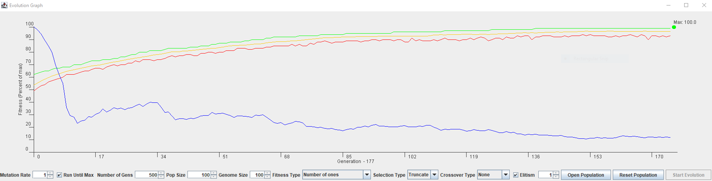
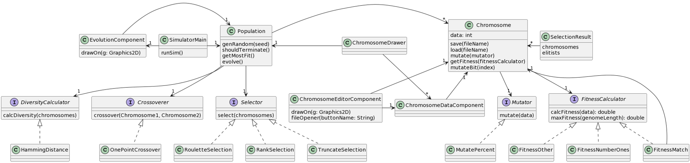

Genetic Algorithm Research Project
The Genetic Algorithm takes a population of chromosome strings combined with user-defined conditions to simulate population evolution and fitness growth. The chromosome represents a string of 1's and 0's with length defined by the user. Using different mutation rates, elitism percentages, selection and crossover methods, the user can simulate many different evolutionay senarios to visually see how the population evolves over time.
The project required a number of classes and invoked several OO design principles to ensure that the simulator was written not only efficiently, but also correctly and neatly.